Viking helmet quest
From depot, go North-east sewer and head to the chest North-east in the cave.
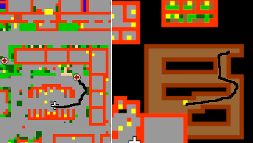
Plate legs, ring of healing, battle shield, green backpack and dark armor quests
From depot, go left side teleporter, there are all these 5 quests.
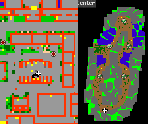
Dwarven legs quest
Head North-west garden like area, there are stairs to go down. The chest is North from there.
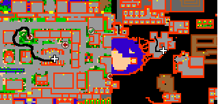
Dwarven armor quest
Head East wall, go a little bit North and on your left is stairs down with narrow path. The chest is there.
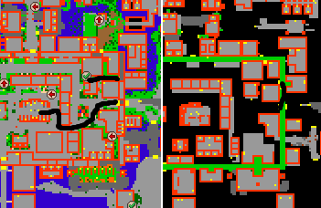
Crown helmet quest
The quest is located South-east from the depot. There’s a hole, after that a sewer. Follow the path to the chest.
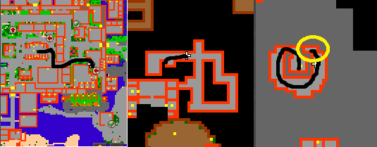
Throwing star quest
Go to the North-west wall, you’ll find ladders nearby, head to the East and go into the tower with all kinds of Dwarfs.
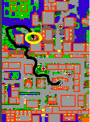
Daramian waraxe quest
Head to the North wall and go down the ladders. Follow the path to the yellow circle on the map.
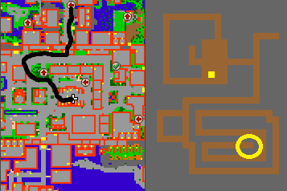
Warhammer quest
As you leave the city walls from east, head North and you’ll find ladders down there with dwarfs. Follow the path to the South, eventually you’ll come across with Dwarf geomancer. Then you know you are on the right path.
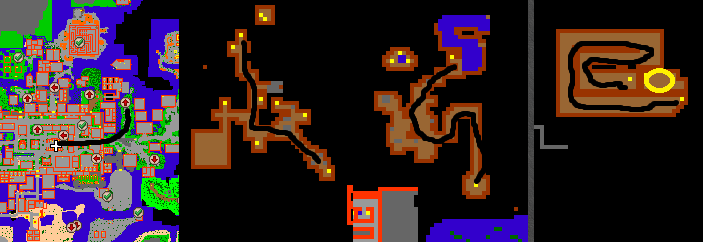
Ornamented shield & Crystal mace
The quest is located North-west from the city walls. Go upstairs with minotaurs and necromancers and head to the ladders leading down. Follow the path through the monks, warlocks and Orshabaals. The teleport leads you to a small room with Orshabaals, Necropharuses and other monsters with a Ornamented shield chest. After that go through the teleport and head West. Go downstairs and follow the path downstairs again. Follow the path that leads you to the experience door with teleport. You’ll find Crystal mace chest after the teleporter.
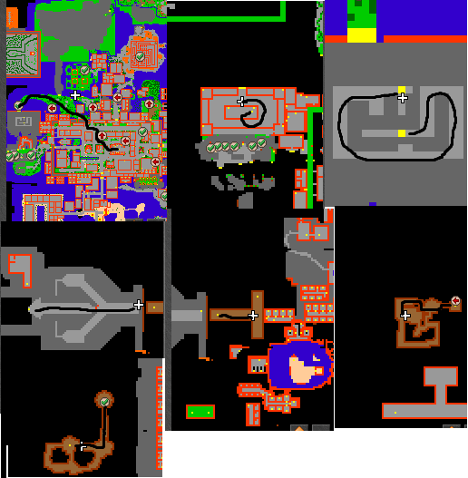
Silver mace quest
Head on the wall and go North-east stairs down. Follow the path downstairs, you’ll find a small room with Orshabaals there with a chest.
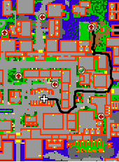
Empty ectoplasma container quest
As you follow your path to the North wall, go past the daramian waraxe quest to the dragon lands. North is located a tower with dragons and dragon lords, go through the teleporter and follow the path to the end.As you follow your path to the North wall, go past the daramian waraxe quest to the dragon lands. North is located a tower with dragons and dragon lords, go through the teleporter and follow the path to the end.
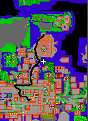
Plasma shield quest
Go from North-west stairs to the wall and go up from the ladders. Go to the other side, head over the bridge to the North. Follow the path till you find experience door where is behind Thalas. Get through the teleport and claim your reward.
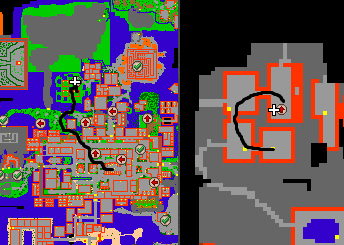